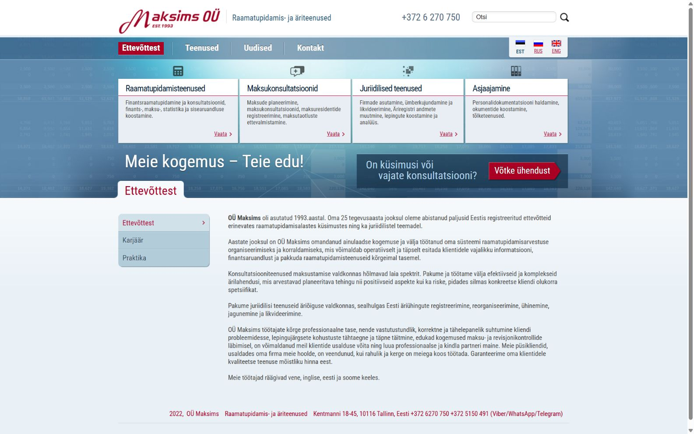
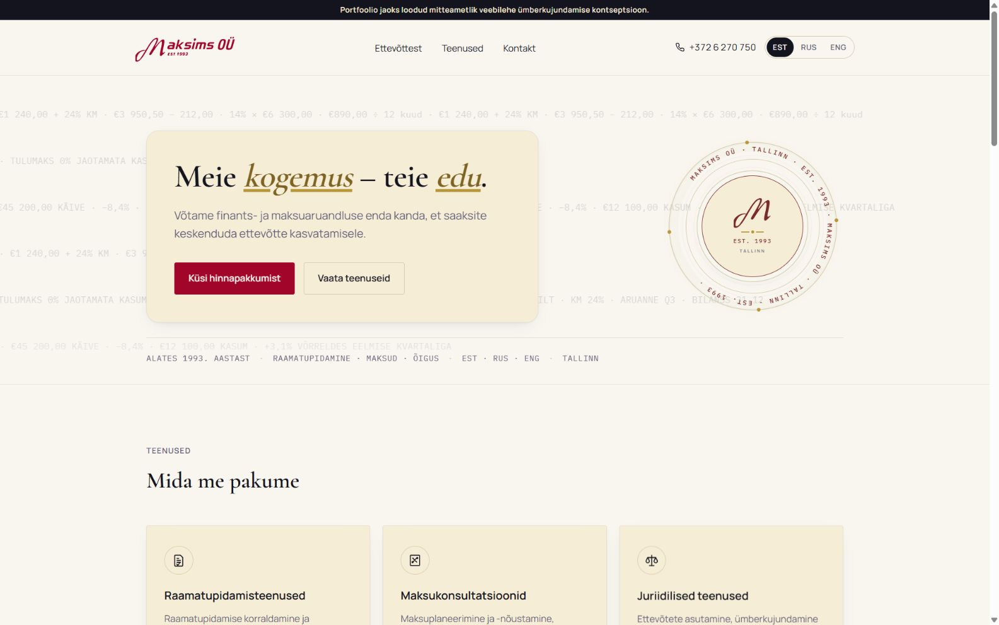
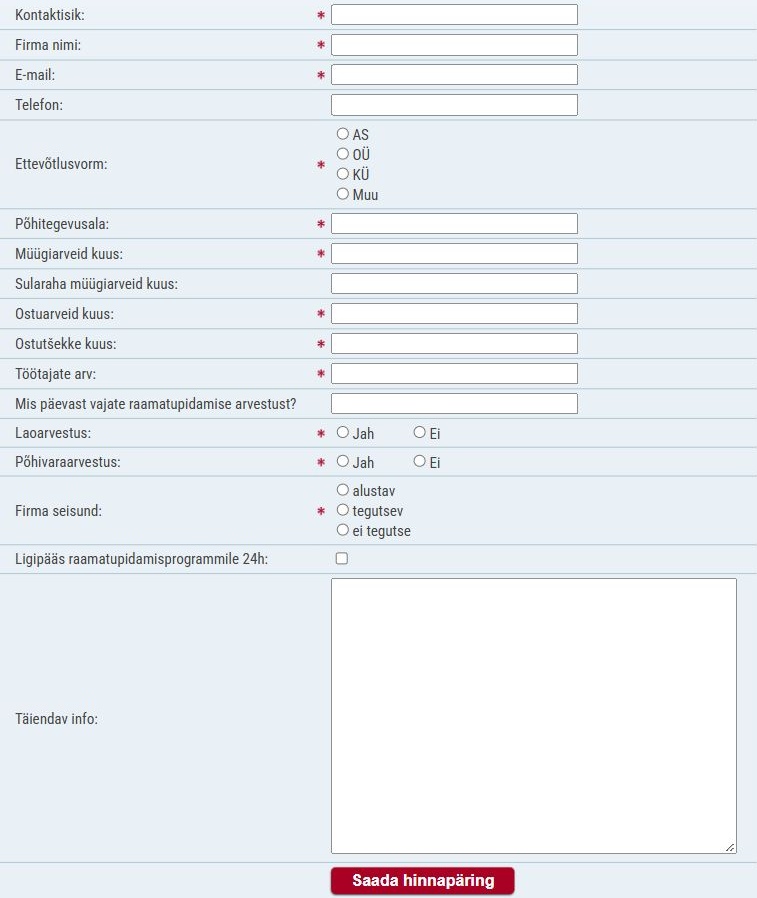
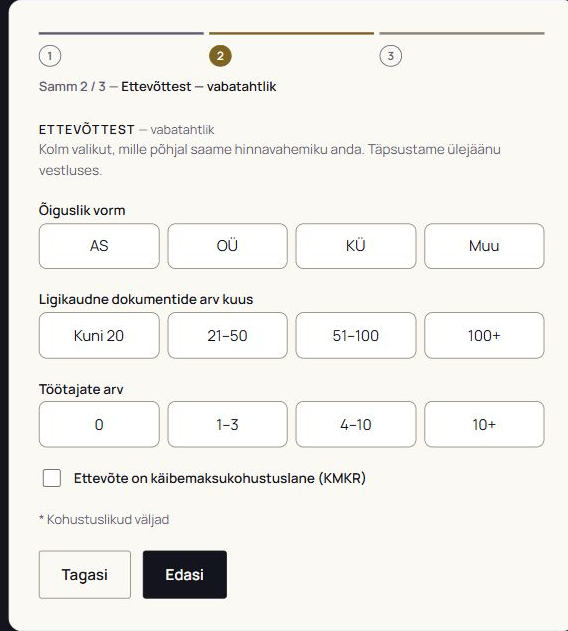
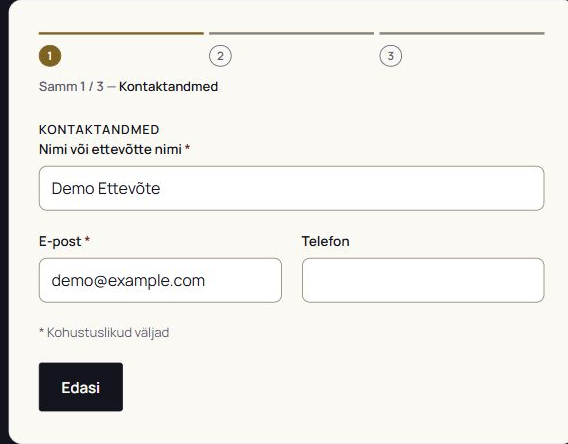
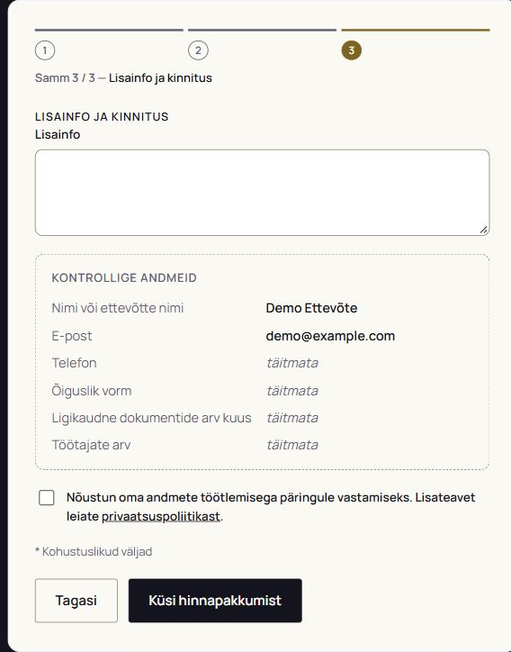
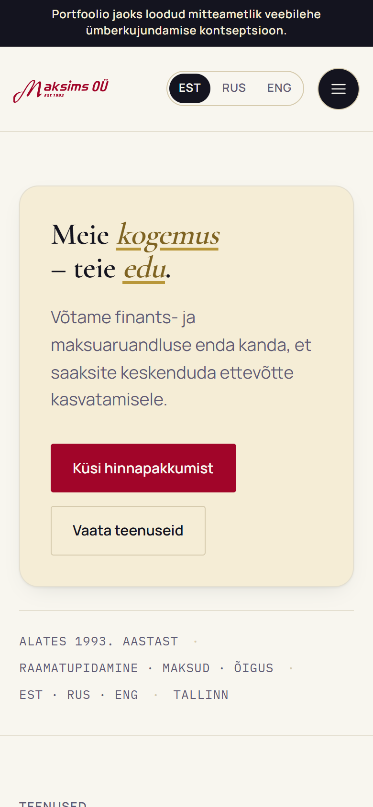
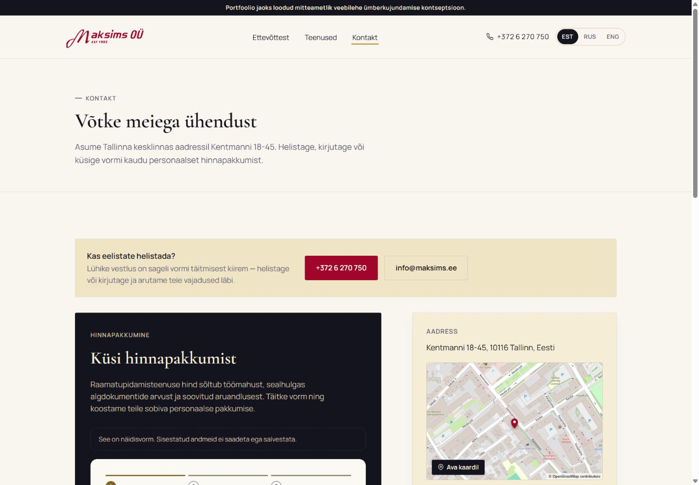

From a company profile
to a clear enquiry path.
An accounting website redesign:
structure, visual identity
and a quote request form.


An accounting website redesign:
structure, visual identity
and a quote request form.


The first screen introduces the service and an action, instead of a long company introduction.
Two clear paths: explore services
or request a quote.
The original form asks for exact figures and company details before the first conversation.
Counts are based on the published form.
“Required” refers to its visible markings.

Sales invoices, purchase invoices and receipts become one estimate of monthly documents.
Large options make selection straightforward. The whole second step is optional: details can wait until the conversation.

Name or company name and email are required. The phone number is optional.
Consent to data processing is also required
before the final action.

The third step shows every answer. Skipped fields are labelled “täitmata” — “not filled in”.
The screenshot contains test data only.
The published form runs in demo mode.

The first screen explains the service and offers two actions: request a quote or explore services.
Actual screen of the published concept.
390 px viewport · 12 October 2026.

Above the form, visitors can choose to call or write instead — whichever channel suits them.
The aim is to reduce enquiry effort.
Impact on enquiries has not been measured.

“Prefer to call?”
A short conversation can be quicker than a form.